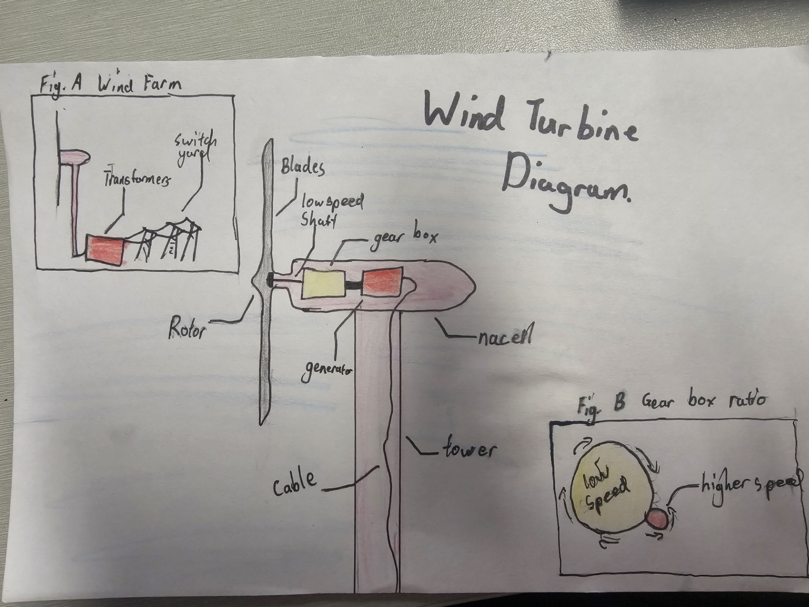

Wind power is a form of renewable energy that harnesses the kinetic energy of wind to generate electricity. Wind turbines convert the wind's energy into mechanical power, which can then be converted into electricity.
| Advantages | Disadvantages |
|---|---|
| Renewable and sustainable: Wind power relies on the natural wind cycle and does not run out as long as wind flows. | Intermittent energy source: Wind is not constant, leading to variability in power generation. |
| Low greenhouse gas emissions: It generates electricity without burning fuel, reducing pollution and climate impact. | Noise and visual impact: Wind turbines can be noisy and may affect the landscape aesthetics. |
| Cost-effective long term: Despite high initial costs, wind power becomes inexpensive over decades due to low maintenance and no fuel costs. | Wildlife impact: Turbines can pose a threat to birds and bats. |
| Supports grid stability: Wind farms can be integrated with other renewable sources to balance energy supply. | Land use and space requirements: Large wind farms require significant land area, which may compete with other land uses. |
| Wind farms can provide local economic development and job opportunities. | Dependence on wind patterns: Changes in wind patterns due to climate change can affect power generation. |

The way wind power works is quite simple. The wind turns the turbine, which drives a low speed shaft. The low speed enters the gearbox (yellow box), whose gears change the low speed shaft to high speed shaft (Fig B). The high speed shaft then enters the generator which converts the motion to electricity. This entire system is housed inside the nacell, the containment system. The wires containing electricity run to the switchyard then to our houses.